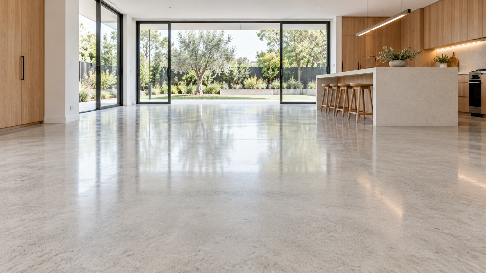
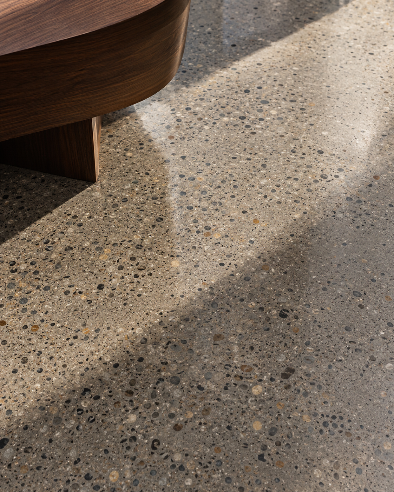
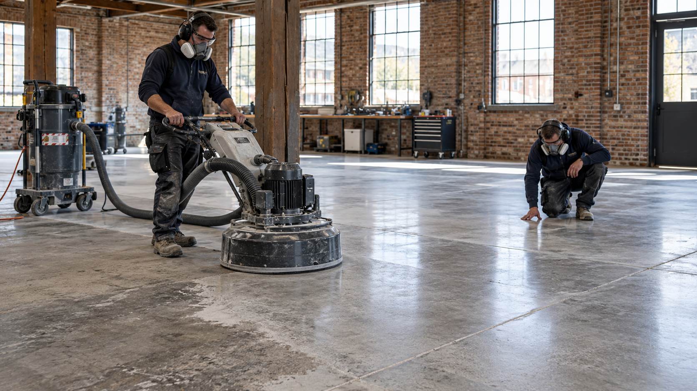
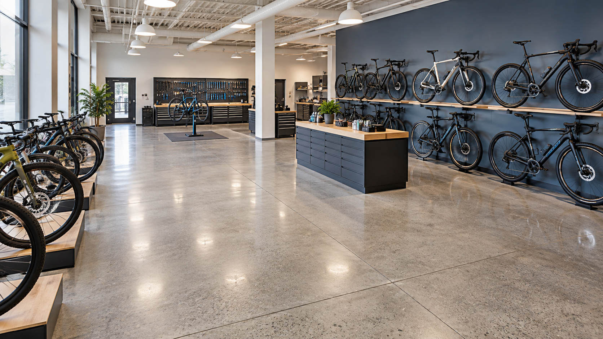
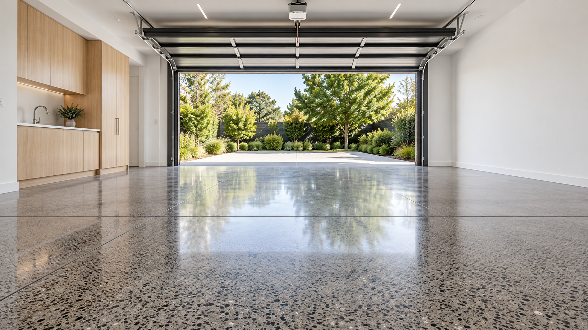

Performance in use
Choose a system around daily activity, traffic and the needs of the room.
APEX / CONCRETE POLISHING
Natural character, thoughtfully refined.
Concrete finishes for homes and commercial spaces.



WHO WE ARE / APEX CONCRETE POLISHING
Apex Concrete Polishing brings together concrete polishing, grind and seal, and preparation services for homes and commercial spaces.
New construction, renovation or an existing floor: the starting point is understanding the slab and how you want to use the space. Explore the finish, the preparation and the care involved before choosing a system.
Explore all six services ↗WHAT MATTERS IN A FLOOR
A practical approach to an architectural surface.
Choose a system around daily activity, traffic and the needs of the room.
Bring texture and reflection into balance with the surrounding architecture.
Discuss the scope, preparation and intended appearance before moving forward.
Let the concrete’s condition and character guide realistic finish choices.
THE APEX APPROACH
 01 /
01 /Refine the concrete itself.
Reveal. Protect. Finish.

03 /The foundation for a coating.
 04 /
04 /Elevate your everyday space.

05 /Made for working spaces.

06 /Protection beyond the interior.
PLAN YOUR FLOOR
Share the slab condition, project requirements and finish you have in mind.
Match preparation and finishing stages to the chosen flooring system.
Discuss cleaning and maintenance for the completed surface.
YOUR SPACE. OUR NEXT CONVERSATION.
Let’s create something